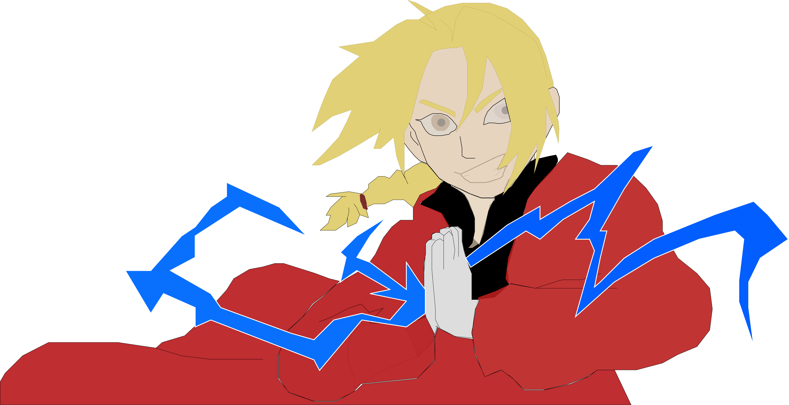

Edward Elric
Edward Elric is a prodigy alchemist in "Fullmetal Alchemist (Brotherhood)" who goes on a search for the Philosopher's stone to get his and his brother, Alphose's, original bodies back. Ed is an intelligent and headstrong protagonist who would do anything for the people he cares about. Throughtout the show, Ed and his brother fight against the Homonculi(7 supernatural beings named after the 7 sins) and the mastermind, Father. Ed and Al are shown to be righteous people who do thier best to help the people around them.
